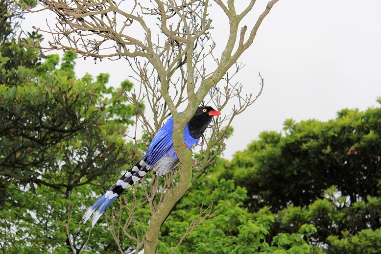

鐘萼木
園區整體植物社會受火山地質及東北季風之影響深遠，冬季的低溫、高濕特質，造成部份原本棲生於2,000公尺中海拔的植物，如臺灣龍膽、昆欄樹在此有海拔分佈的「北降現象」。
園區植物景觀大致可分為水生、草原及森林植被三大類：水生植被以火口沼澤地、貯水池為主要分佈區，而以水毛花、針藺、荸薺、燈心草等較為常見，「臺灣水韭」更為臺灣特有種，位於七星山東南山麓的夢幻湖是目前所知其唯一的自然棲地。
包籜矢竹及白背芒為園區草原景觀之主要植被，廣見於600公尺以上地區。
森林植被則以樟科植物為優勢種，如紅楠、大葉楠等，其他如楊桐、昆欄樹、墨點櫻桃亦極為常見，人工造林樹種則以相思樹、柳杉、楓香、黑松、琉球松等數量較多。隨著季節的更迭，本區的植物亦會更換多變的外衣，值得您慢慢品味。
陽明山國家公園多樣的地形及繁茂的植被，提供了各種動物絕佳的覓食、活動和棲息場所，進而孕育了豐富的動物群聚。
園區的中型哺乳動物以赤腹松鼠、臺灣野兔、鼬獾及臺灣獼猴族群數量較多，白鼻心、穿山甲與麝香貓偶可見之，而臺灣獼猴、臺灣野豬、山羌、穿山甲、臺灣大蹄鼻蝠、臺灣小蹄鼻蝠、臺灣葉鼻蝠、臺灣管鼻蝠都是臺灣特有種。
臺灣藍鵲
以鳥類來說，除低海拔常見的粉紅鸚嘴、繡眼畫眉、竹雞和五色鳥等優勢鳥種外、臺灣特有種-臺灣藍鵲於區內不難見到。每年秋季的10月及春季的3月，因為候鳥過境的關係，是本區鳥種最豐富的月份，尤以白腹鶇最為易見；屬夏候鳥的家燕在每年的4月至9月，則常見於冷水坑、小油坑地區。
在兩棲類中，以臺北樹蛙、澤蛙、長腳赤蛙、盤古蟾蜍等族群量較大。爬蟲類中，則以黃口攀蜥、印度蜓蜥、麗紋石龍子、赤尾青竹絲、花浪蛇、紅斑蛇及青蛇等較為常見。
陽明山地區每屆春、夏季之5月至8月，常見炫麗斑斕的蝶群出現在不同類型的環境，尤其各山頂草原區之青斑蝶類，更常成百上千地隨著氣流日日重覆上演著群蝶飛舞的壯觀景象；除了斑蝶類外，引人注目的鳳蝶在本區內亦有多量分佈，而以大鳳蝶、大紅紋鳳蝶、烏鴉鳳蝶和黑鳳蝶較為易見。夏日的蟬、秋夜的螽斯和其他數以千計的昆蟲，更豐富了陽明山國家公園的生物多樣性。
Copyright © 2021 All Rights Reserved.
最近更新日期：2021-06-24